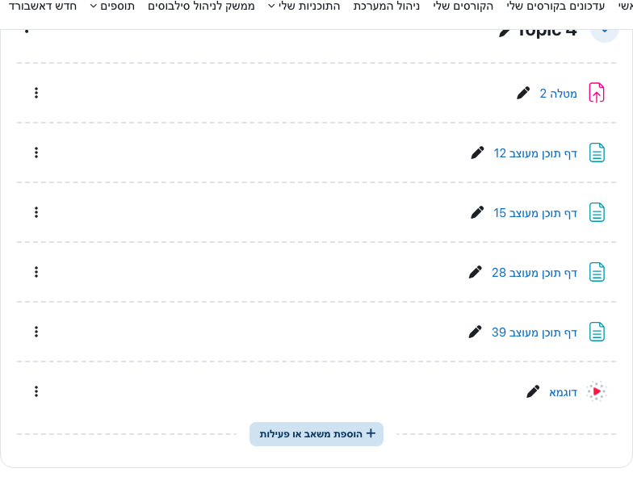
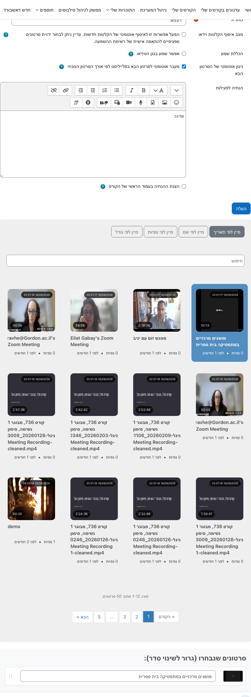
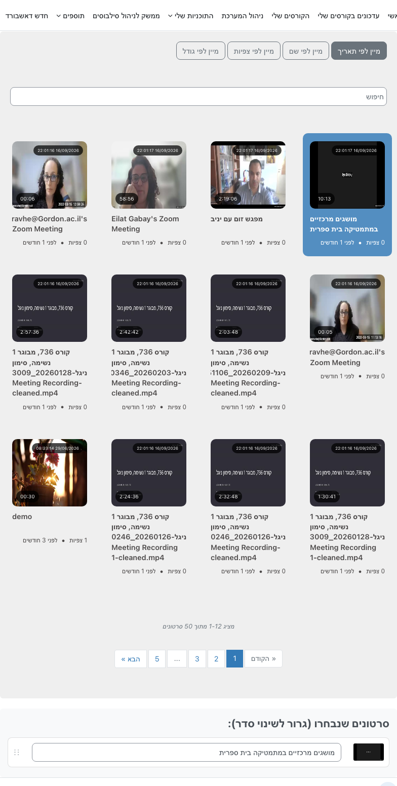
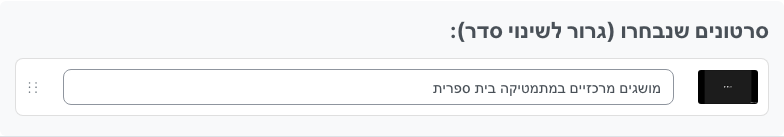
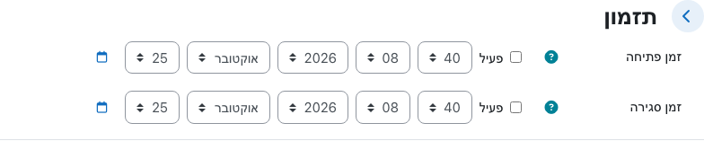
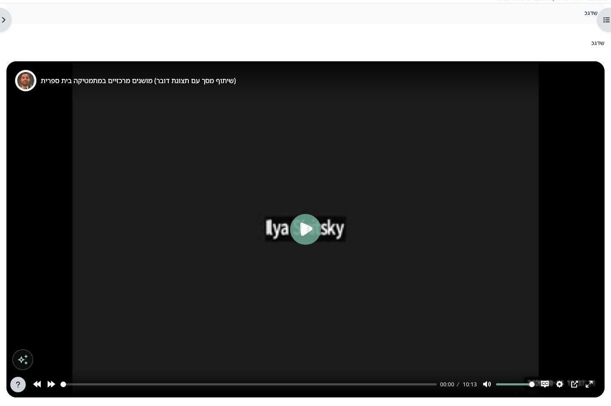

Qué hace
La incrustación se hace con la actividad STREAM. Después de guardar, los estudiantes ven el vídeo dentro del curso, sin salir de Moodle.
También se puede incrustar un vídeo antiguo que ya está en la lista del docente. No hace falta volver a subirlo.
Añadir la actividad al curso
- Entre al curso en Moodle.
- Active el modo de edición.
- En la sección donde debe aparecer el vídeo, pulse Añadir una actividad o un recurso.
- Elija STREAM.
- Ponga un nombre a la actividad. Los estudiantes ven ese nombre en el curso.

Elegir un vídeo que ya existe
En la configuración de la actividad aparece la lista de sus vídeos en Stream. La lista se carga según el correo del usuario de Moodle e incluye vídeos listos para ver de la cuenta de Stream correspondiente, aunque se hayan subido o grabado antes.
Un vídeo aparece en la lista cuando:
- está en estado listo para ver
- su privacidad es público, autenticación o enlace
Un vídeo privado, o uno que todavía se está procesando, no se puede elegir.
- Busque el vídeo. Puede buscar por nombre en Buscar y ordenar por fecha, nombre, vistas o tamaño.
- Pulse la tarjeta del vídeo. La tarjeta seleccionada se marca en azul.
- Pulse otra vez la misma tarjeta para quitar la selección.
- Puede elegir varios vídeos. El estudiante los ve como una lista de reproducción dentro de la misma actividad.
La fecha de subida aparece en la miniatura, así que los vídeos antiguos siguen disponibles.
El botón Subir abre un formulario para un vídeo nuevo. No hace falta usarlo si el vídeo ya está en la lista.


Vídeos seleccionados
Debajo de la lista está Vídeos seleccionados (arrastrar para reordenar):
- Arrastre el control para fijar el orden de reproducción.
- Puede editar el título que ven los estudiantes sin cambiar el título original en Stream.

Opciones
| Opción | Qué hace |
|---|---|
| Modo de recopilación de grabaciones | Recoge automáticamente grabaciones nuevas. Puede dejarlo desactivado y elegir vídeos a mano. Si está activo, aún puede elegir vídeos concretos. |
| Incluir audio | Desactivado: el vídeo se reproduce sin sonido. Activado: el reproductor incluye audio. |
| Reproducir el siguiente vídeo | En una lista, el siguiente vídeo empieza al terminar el actual. El estudiante puede seguir eligiendo un vídeo de la lista. |
| Descripción de la actividad | Texto que ven los estudiantes encima del reproductor. |
Temporalización
La sección Temporalización limita cuándo los estudiantes pueden abrir la actividad:
- Hora de apertura — la actividad no está disponible antes de esa hora. Marque Habilitar para activar el límite.
- Hora de cierre — después de esa hora no se puede ver. Sin Habilitar, la actividad sigue abierta.

Guardar
- Guardar cambios y mostrar — guarda y abre la página de visualización.
- Guardar cambios y volver al curso — guarda y vuelve a la lista de actividades.
- Cancelar — sale sin guardar.
Sin elegir un vídeo (y con el modo de recopilación desactivado) no se puede guardar la actividad.
Qué ve el estudiante
Después de guardar, la actividad aparece en el curso. Al abrirla se muestra el reproductor dentro de Moodle. Si se eligieron varios vídeos, el estudiante pasa de uno a otro dentro de la misma actividad.
